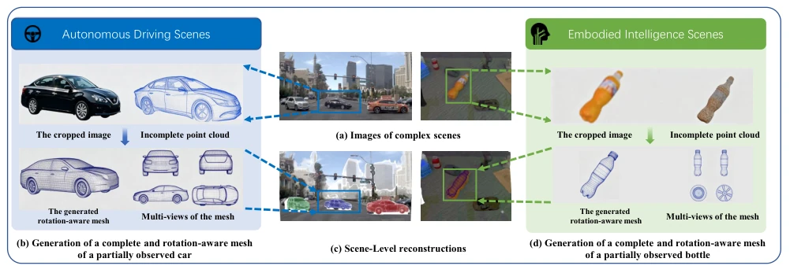
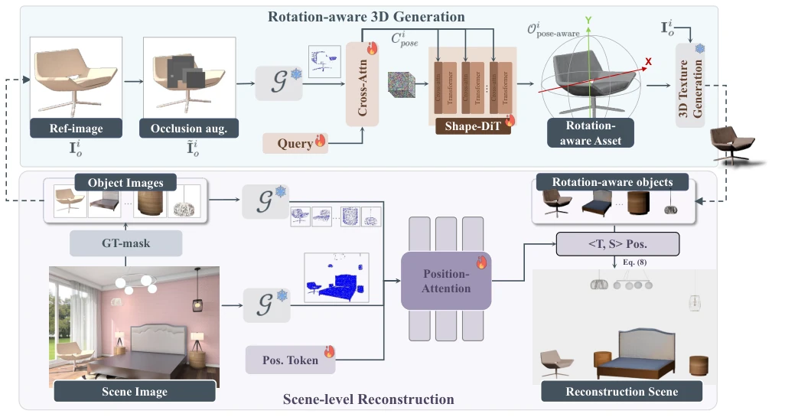
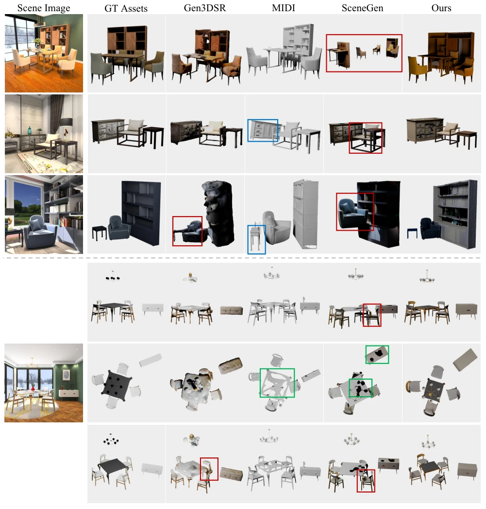
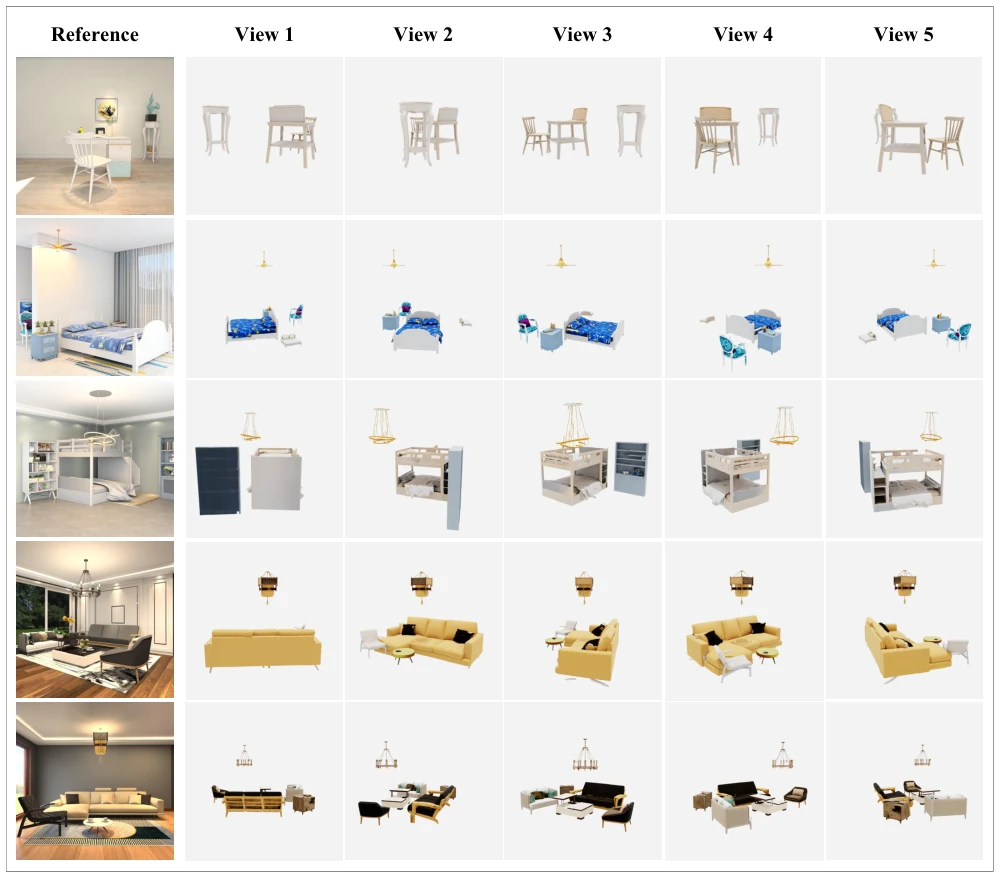

This paper attempts to solve single-image 3D scene reconstruction using the "generation is reconstruction" paradigm. The core trick involves encoding rotation into Mesh vertices, while calculating translation and scaling separately, essentially building a bridge across the coordinate system gap between "object generation" and "scene reconstruction". SceneReGen indeed tops the rankings on scene-level metrics on 3D-FUTURE, with CD and IoUB both outperforming SceneGen and MIDI, which is worth acknowledging. However, to be blunt, texture generation still utilizes Hunyuan3D's off-the-shelf module, becoming blurry when encountering large occlusions or extreme lighting conditions. Moreover, without collision detection, reconstructed objects often penetrate meshes, and physical interaction still relies on post-processing. For embodied intelligence, obtaining a complete object Mesh is beneficial, but the current "assets" are not robust enough and are still far from true deployment. However, this asset-centric representation indeed provides convenience for downstream tasks, such as autonomous driving scene reconstruction.
研究动机Motivation
单图 3D 场景重建的核心痛点是“物体级生成”与“场景级重建”的表示鸿沟。现有的物体生成模型（如 Zhao et al. 2025）通常输出归一化 canonical 空间的 Mesh，而场景重建需要 observation-aligned 框架。现有方案分两派：一派是物体优先（Gen3DSR），先补全再配位，误差会传播；另一派是联合建模（SceneGen），参数耦合导致几何和位姿难分离。DUSt3R 和 VGGT 虽能提取几何线索，但单视图遮挡严重。我们需要解耦旋转和位姿，因为旋转与图像条件强相关，而平移缩放依赖场景上下文。这种解耦能减少误差传播，提升重建一致性。
The core pain point of single-image 3D scene reconstruction is the representation gap between "object-level generation" and "scene-level reconstruction". Existing object generation models (such as Zhao et al. 2025) typically output normalized canonical space Meshes, whereas scene reconstruction requires an observation-aligned framework. Existing solutions are divided into two camps: one is object-first (Gen3DSR), completing first then aligning, where errors propagate; the other is joint modeling (SceneGen), where parameter coupling makes geometry and pose difficult to separate. Although DUSt3R and VGGT can extract geometric clues, single-view occlusion is severe. We need to decouple rotation and pose, because rotation is strongly correlated with image conditions, while translation and scaling depend on scene context. This decoupling can reduce error propagation and improve reconstruction consistency.

Figure 1: Qualitative SceneReGen outputs in autonomous-driving and embodied-AI scenarios. Given a scene image (a), SceneReGen reconstructs complete object meshes in their observed orientations (b, d) and estimates translation and scale to assemble them in a shared observation-aligned scene frame (c).
SceneReGen adopts a selective pose factorization framework. The pipeline is divided into a generation branch and a reconstruction branch. First, VGGT-Ω is used as a geometric encoder to extract dense geometric clues. In the generation branch, Learnable Shape Queries aggregate features and are input into the DiT generator, with rotation information injected via Cross-Attention, directly producing an oriented Mesh, with rotation encoded in the vertices. In the reconstruction branch, Position Queries fuse instance and global scene features to predict translation and scaling parameters. Finally, the generated Mesh is scaled and translated to a shared frame. Texture generation is a post-processing step. This design avoids parameter coupling brought by joint optimization, assigning rotation to the generator and pose to the reconstructor. Loss functions include flow-matching and L1 pose loss. Occlusion augmentation was used during training to simulate real occlusion situations.

Figure 2: Overview of SceneReGen. Given a scene image and ground-truth instance masks, the rotation-aware generation branch uses object-level geometric cues to generate a complete mesh for each instance in its observed orientation, followed by texture generation. The scene-level reconstruction branch combines object- and scene-level cues with position queries to estimate translation and scale and assemble the objects in a shared observation-aligned scene frame.
Tested on the 3D-FUTURE dataset, containing 14k training scenes. Compared with MIDI, Gen3DSR, SceneGen, etc. Metrics include CD, F-Score, IoUB. SceneReGen achieves the best scene-level CD and F-Score, the highest IoUB, and comparable object-level CD. Ablation experiments (Table 2) demonstrate that VGGT-Ω is superior to DINOv2, and occlusion augmentation is effective. However, limitations are obvious: texture is blurry under occlusion, performance is poor with low-resolution input, and lack of collision regularization causes mesh penetration. This indicates the method is strong in geometric reconstruction, but physical consistency and texture robustness still require improvement.

Figure 3: Qualitative comparison across different methods. The panels below the dashed line show results from different viewpoints given the same reference image. Red boxes highlight methods affected by wrong relational placement (e.g., geometric intersections), blue boxes indicate inconsistencies in object orientation, and green boxes reveal incomplete object geometry.
其他图片Other Figures

Figure 4: More qualitative results from our method.